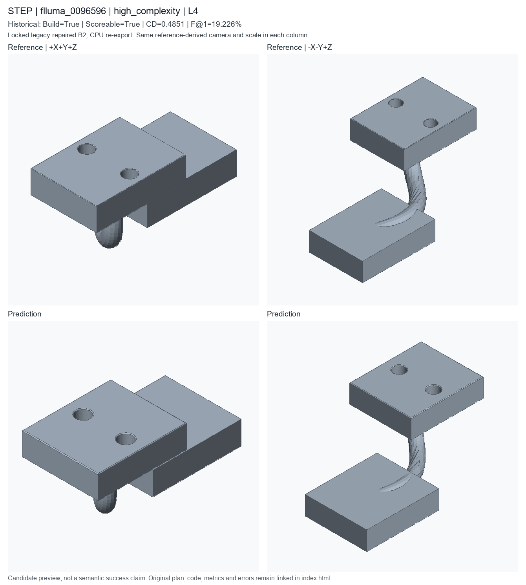

high_complexity; L4; historical deployed repaired B2. Candidate status is unchanged.
Highest documented tier, largest reference feature count, then scoreable/median-F@1 preference and sample ID
These are new CPU exports of locked historical code, not newly generated model predictions or recovered original temporary STEP files. Executable does not mean semantically accurate. Historical seed/checkpoint-byte binding remains unresolved.

Input asset: Kernel-derived50-global-statistic descriptor JSON; not a face/edge B-Rep graph. CAD renders above show geometry, not a fabricated point-cloud or descriptor input.
A built from 8 ordered CAD features, approximately 28.1 by 16.3 by 12.855 mm. Swept pipe bracket model with 2 bolt holes, chamfered edges, and a swept tube body.
PART flluma_0005000 CAT swept_pipe_bracket UNITS mm SEED 20265514 PARAM chamfer_distance 0.1 MIN 0.05 MAX 1 SEM chamfer_distance PARAM flange_length 14.1 MIN 8 MAX 32 SEM primitive_length PARAM flange_thickness 3.7 MIN 2 MAX 12 SEM thickness PARAM flange_width 12.1 MIN 6 MAX 26 SEM primitive_width PARAM hole_radius 1.1 MIN 0.5 MAX 4 SEM hole_radius PARAM path_height 8.7 MIN 4 MAX 16 SEM path_height PARAM path_length 14.1 MIN 10 MAX 45 SEM path_length PARAM path_mid_length 8.1 MIN 5 MAX 35 SEM path_mid_length PARAM path_offset 5.4 MIN 2 MAX 18 SEM path_offset PARAM tube_radius 1.1 MIN 0.6 MAX 4 SEM sweep_radius F sweep_tube_001 OP_SWEEP_TUBE SEM sweep_tube ROLE primary_body PARAMS path_height=@path_height path_length=@path_length path_mid_length=@path_mid_length path_offset=@path_offset profile_segments=16 radius=@tube_radius F box_001 OP_BOX SEM flange ROLE secondary_feature PARAMS length=@flange_length width=@flange_width height=@flange_thickness F translate_001 OP_TRANSLATE SEM placement ROLE secondary_feature DEP box_001 PARAMS offset=[0,0,-0.55] F join_001 OP_BOOLEAN_JOIN SEM joined_tube ROLE secondary_feature DEP sweep_tube_001,translate_001 TARGET sweep_tube_001,translate_001 F hole_001 OP_HOLE_PATTERN SEM mounting_hole ROLE functional_feature DEP join_001 TARGET join_001.top_face PARAMS count=2 depth=THROUGH positions=[[-3.38,0],[3.38,0]] radius=@hole_radius F chamfer_001 OP_CHAMFER SEM outer_chamfer ROLE finishing_feature DEP hole_001 TARGET hole_001.top_face PARAMS distance=@chamfer_distance END
# Literal first40 lines of executed prediction; full program is prediction.py
params = Parameters()
params.add('chamfer_distance', 0.1, min=0.05, max=1.0, semantic_type='chamfer_distance')
params.add('flange_length', 14.1, min=8.0, max=32.0, semantic_type='primitive_length')
params.add('flange_thickness', 3.7, min=2.0, max=12.0, semantic_type='thickness')
params.add('flange_width', 12.1, min=6.0, max=26.0, semantic_type='primitive_width')
params.add('hole_radius', 1.1, min=0.5, max=4.0, semantic_type='hole_radius')
params.add('path_height', 8.7, min=4.0, max=24.0, semantic_type='path_height')
params.add('path_length', 14.1, min=10.0, max=45.0, semantic_type='path_length')
params.add('path_mid_length', 8.1, min=5.0, max=35.0, semantic_type='path_mid_length')
params.add('path_offset', 5.4, min=2.0, max=18.0, semantic_type='path_offset')
params.add('tube_radius', 1.1, min=0.6, max=4.0, semantic_type='sweep_radius')
part = Part('flluma_0005000', category='swept_pipe_bracket', parameters=params, seed=20265514, sample_id='flluma_0005000', units='mm')
sweep_tube = part.sweep_tube(name='swept_pipe_body', radius=params['tube_radius'], path_length=params['path_length'], path_mid_length=params['path_mid_length'], path_offset=params['path_offset'], path_height=params['path_height'], profile_segments=16, semantic_type='sweep_tube')
box = part.box(name='pipe_flange_seed', length=params['flange_length'], width=params['flange_width'], height=params['flange_thickness'], semantic_type='flange')
moved = part.translate(name='place_start_flange', target=box, offset=[0.0, 0.0, -0.55], semantic_type='placement')
moved_2 = part.translate(name='place_end_flange', target=box, offset=[14.1, 5.4, 8.7], semantic_type='placement')
join = part.boolean_join(name='join_start_flange', target=sweep_tube, tool=moved, semantic_type='flange')
join_2 = part.boolean_join(name='join_end_flange', target=join, tool=moved_2, semantic_type='flange')
holes = part.hole_pattern(name='pipe_flange_bolt_holes', target=join_2.top_face(), radius=params['hole_radius'], depth='through', positions=[[-3.38, 0.0], [3.38, 0.0]], semantic_type='bolt_hole_pattern')
chamfer = part.chamfer(name='pipe_bracket_edge_chamfer', target=holes.top_outer_edges(), distance=params['chamfer_distance'], semantic_type='outer_chamfer')
__all__ = [ 'part' ]